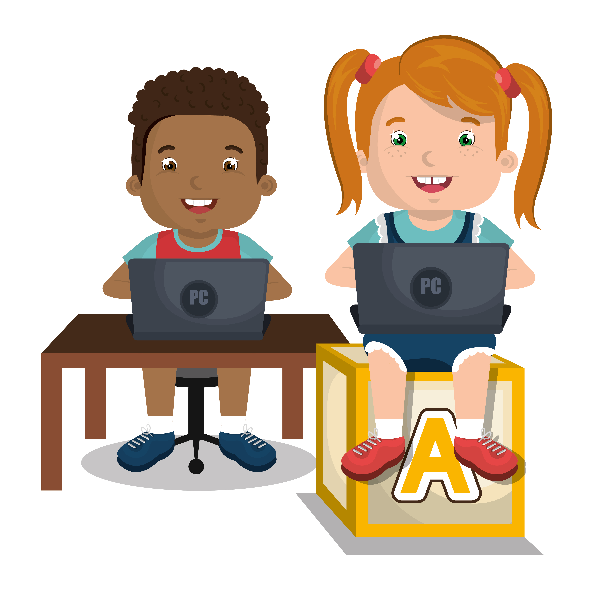

My Activism Project: Code Blasters
Empowering Unique Minds Through the Power of Coding!
About My Topic
Welcome to Code Blasters, a unique platform dedicated to empowering kids and young adults with ADHD and other disabilities through the world of coding. We provide an engaging and supportive learning environment where students can explore and master coding concepts at their own pace.
Our curriculum is specifically tailored to cater to the unique learning styles of our students. We use interactive, game-based learning to make coding fun and accessible. Our courses are designed to enhance focus, problem-solving skills, and creativity, turning perceived obstacles into strengths.
At Code Blasters, we believe in the potential of every student. Join us on this exciting journey to blast through barriers and unlock a world of possibilities with code!"
Our Mission
Our mission is to create a nurturing, inclusive, and engaging learning environment that breaks down barriers and unlocks the potential within each student. We strive to foster creativity, problem-solving skills, and confidence in our students, equipping them with the tools to not only understand the digital world but also to shape it. At Code Blasters, we believe in transforming challenges into opportunities for growth and innovation through the power of coding.
Data about my topic

Coding is not just a hobby; it’s a valuable skill in today’s job market. Furthermore, the US Bureau of Labor Statistics has projected that by 2029, demand for developers will grow by 22%. Learning to code can open doors to a wide range of career opportunities for children with ADHD, helping them build a brighter future.
As children with ADHD and Autism develop coding skills, they may discover a passion for programming and pursue careers in software development, game design, data analysis, or other related fields.

Impact!
Enhancing Cognitive Skills
Children with ADHD often struggle with sustaining attention and focus. Coding requires systematic thinking, problem-solving, and attention to detail, which can help improve their ability to concentrate and stay engaged in tasks.
Developing Logical and Sequential Thinking
Coding involves breaking down complex problems into smaller, manageable steps, promoting logical and sequential thinking. This structured approach can be particularly beneficial for children with Autism who may prefer routines and order.
Strengthening Memory and Processing Speed
Through coding, children must remember and execute various commands and algorithms. This process can enhance their working memory and processing speed, which are vital cognitive skills.